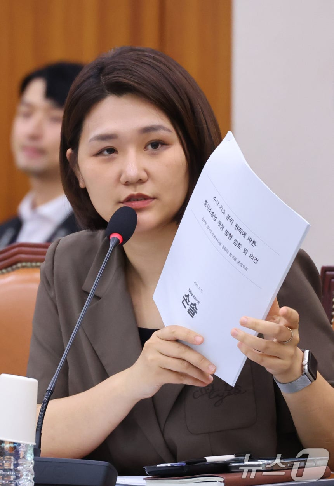

국회 후반기 법사위,
시작합니다
월간 손솔
국회의원 손솔 의정보고서
2026년 7월호
커버스토리국회 법제사법위원회,
국회 법제사법위원회,
일하는 사람들의 권리를 지키고
차별과 혐오에 맞서겠습니다.
법사위이슈

선관위 개혁이슈


법안발의이슈


방송출연이슈

동탄소식이슈


후원이슈
손솔의 한 달
손솔의 7월 몰아보기
- 7.1정명근 화성특례시장 취임식
홈플러스 정상화 진보당 정당연설회 - 7.2법사위 전체 회의
YTN 라디오 <뉴스 정면승부> - 7.3뉴스토마토 유튜브 <뉴스인사이다>
<중국공산당 창립 105주년 기념 및 신시대 한중관계 발전 논의> 좌담회 - 7.47.4 예술강사 총궐기대회
동탄 현장민원실 - 7.5진보당 성평등위원회 강사단 보수교육
- 7.6피지컬 AI 산업 생태계 현장 점검을 위한 중국 방문
- 7.7피지컬 AI 산업 생태계 현장 점검을 위한 중국 방문
- 7.8피지컬 AI 산업 생태계 현장 점검을 위한 중국 방문
- 7.9학술연합체 VAN 미팅
- 7.10KBC 여의도 진검승부
- 7.11동탄 현장민원실
- 7.12동탄 현장민원실
- 7.13‘검찰개혁’에 따른 형사소송법 개정에 대한 여성폭력 피해자 지원단체 기자회견
- 7.14진보당 의원총회
손솔의 차별금지법 작전회의 _ 힙독살롱 - 7.15뉴스토마토 유튜브 <뉴스인사이다>
'선관위개혁을 위한 원포인트 개헌 어떻게 할 것인가' 개헌방안 마련을 위한 입법공청회
법사위 전체회의 - 7.16동물의 비물건화 민법 개정안 등 발의 기자회견
- 7.17제78주년 제헌절 경축식
- 7.18-
- 7.19진보당 제4기 전국동시당직선거 수도권 유세
- 7.20-
- 7.21형사소송법 발의 기자회견
진보당 의원총회 - 7.22아동·청소년의 성보호에 관한 법률상 미성년자의제강간, 성착취물 제작 혐의 최영중 시의원 영장 반려 관련 청주지검 항의방문
법사위 전체 회의 - 7.23민주노총 전북본부장 징계 철회 촉구 기자회견
주한중국대사-중국방문 의원단 오찬
본회의 - 7.24뉴스토마토 유튜브 <뉴스인사이다>
KBC 여의도 진검승부
4기 진보당 지도부 선출대회
후원 안내
후원으로 손솔을 키워주세요!
손솔의 든든한 편이 되어주세요.
열정적인 의정활동으로 보답하겠습니다.
후원 계좌
농협 301-0373-2658-21
(국회의원 손솔 후원회)